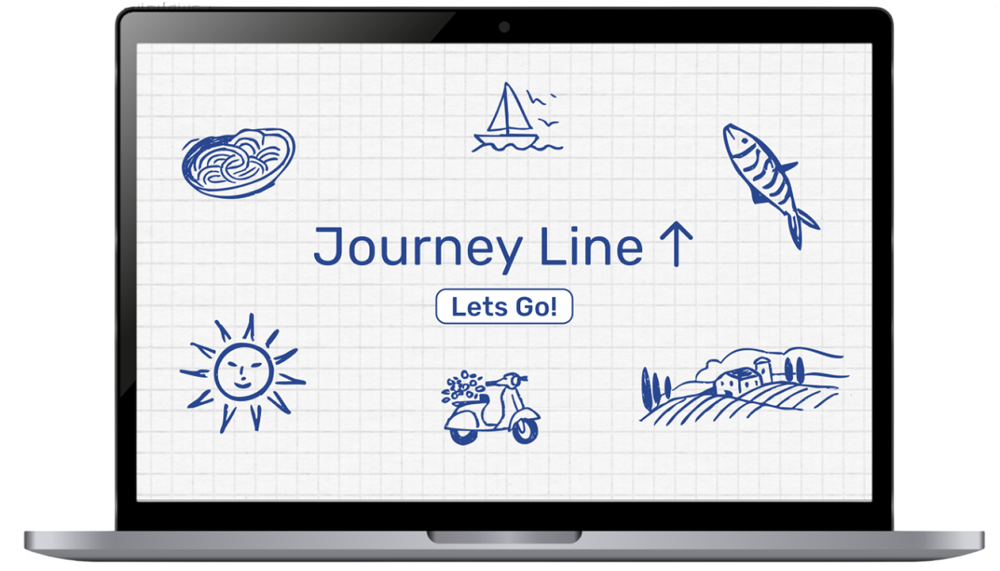
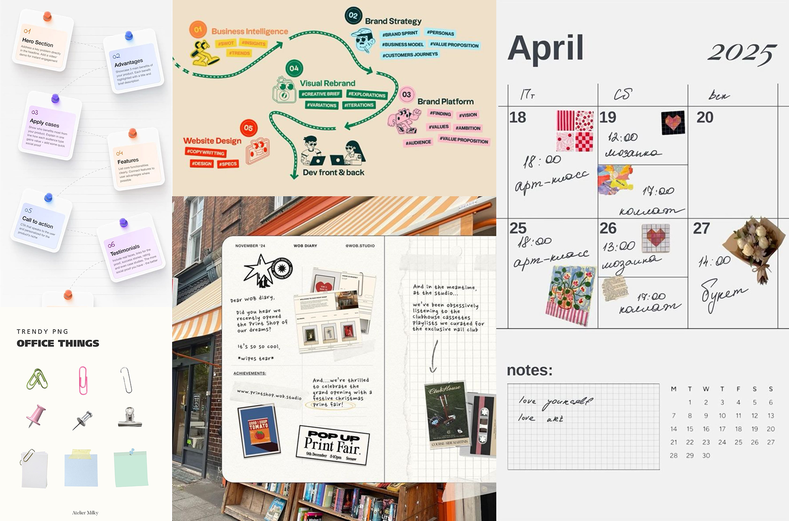
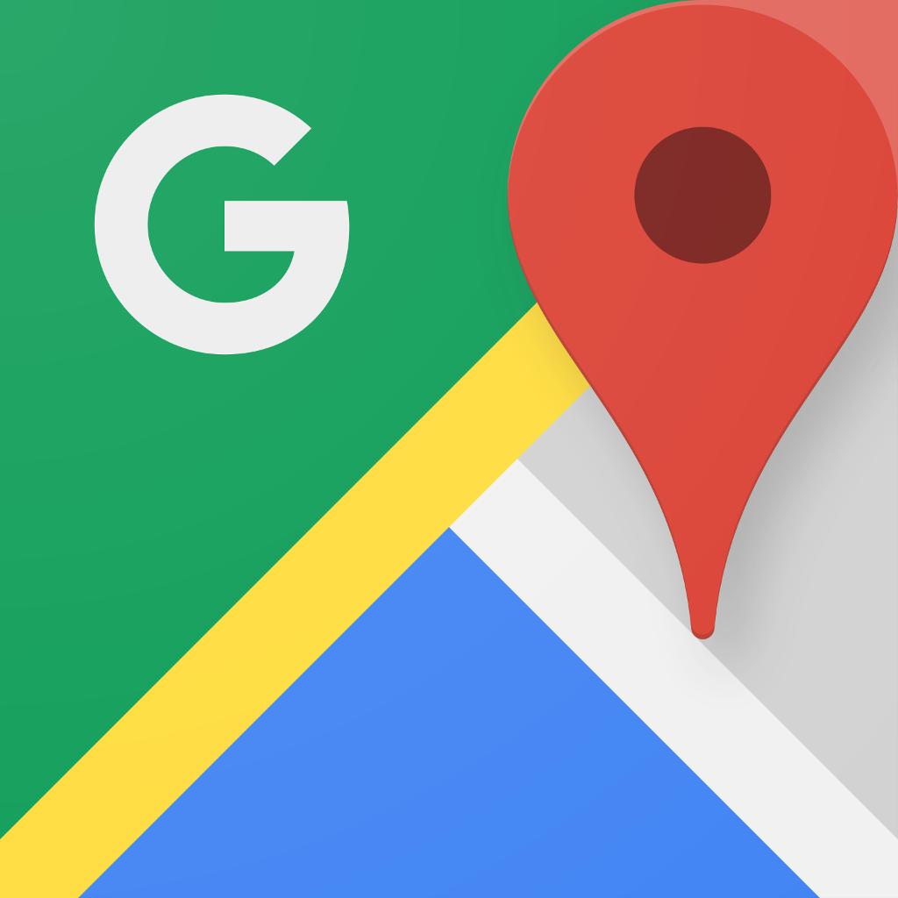
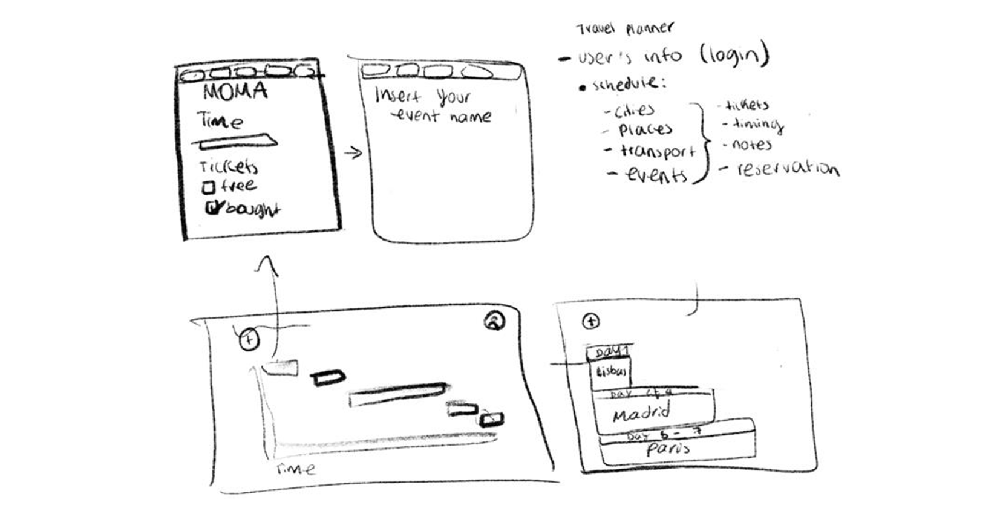
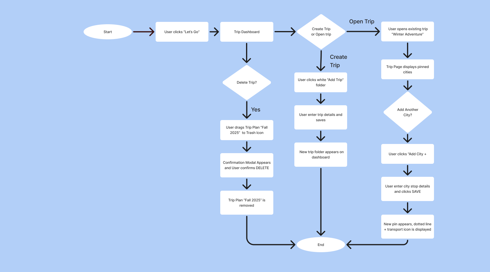
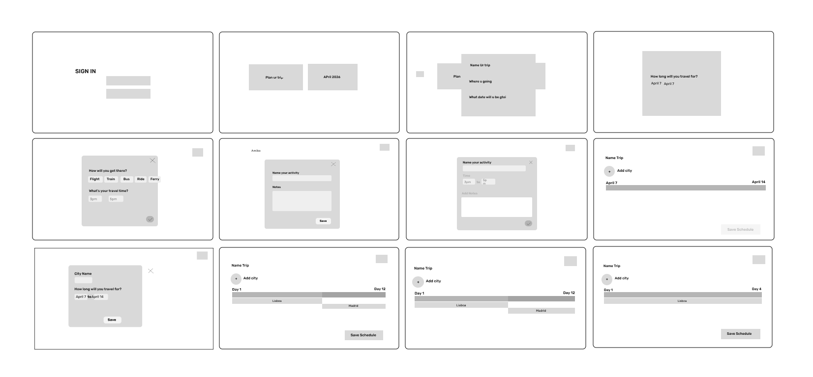
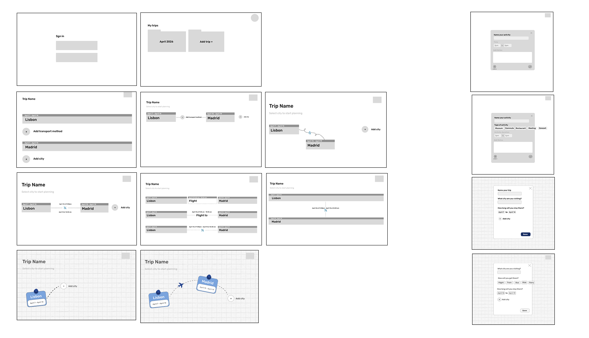
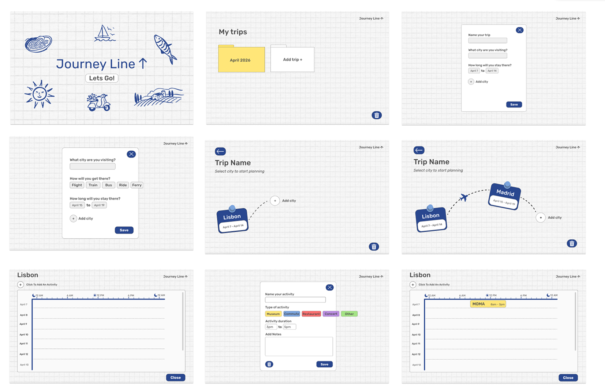

Kayak
Kayak helps users book travel efficiently, but offers limited support for organizing or visualizing how a trip unfolds over time.
 ← Back to Work
← Back to Work

Journey Line is a travel-based app designed to allow locals and travelers to easily learn, browse and plan exciting trips on a calendar using pins and by referencing other created itineraries. By using a dynamic timeline visualization, it enhances browsing and organization.
There are plenty of itinerary apps out there, but they force users to decide between rigid planning tools or saving inspiration without structure. No single central space to organize ideas, inspiration, and concrete reservations.
To design a visual, timeline-based trip planner that can fit an undefined itinerary or a detailed one – always providing the flexibility to stay inspired throughout the journey.
I was responsible for the system design, UX/UI, hierarchy and flow. I partnered with a developer collaborator to understand technical constraints and ensure feasibility.
I studied different systems to see how others visualize progression, iteration, and planning. From Figma's version control to Google Calendar's structure – I wanted to synthesize flexible planning with intuitive visual timelines.

The JourneyLine color system uses semantic, activity-based color coding to visually organize trips over time, helping users quickly understand and rearrange their journey with minimal cognitive effort.
An analysis of existing trip-planning web apps focused on user flow, interaction patterns, and how trips are created, updated, and visualized over time. The goal was to identify gaps in temporal planning, flexibility, and experiential clarity.
Kayak helps users book travel efficiently, but offers limited support for organizing or visualizing how a trip unfolds over time.

Google Maps excels at showing where things are, but not when or in what order they should happen. Lack of order when planning multi-day or multi-city trips.
While Wanderlog introduces structure, it lacks fluid interaction. Users can plan, but can't easily reshape their journey through continuous timelines.
Tripadvisor supports decision-making, but not planning behavior. Users must mentally translate reviews into an itinerary using external tools.
Across platforms, trips are stored efficiently but lack visual, time-based sequencing—creating an opportunity for a more flexible, narrative-driven planning experience.
I started with wireframes mapping out the core user flow – from browsing inspiration to pinning activities onto a timeline. Early sketches helped clarify the drag-and-drop interaction model.
Early sketches were used to explore layout ideas and core interactions, focusing on how trips, cities, and activities could be represented along a timeline. This stage helped define the overall structure before committing to digital layouts.

User flow diagrams were created to map how users move through the app when creating, editing, and managing trips. These flows clarified system logic, reduced friction points, and ensured consistency across key actions.

Low and mid-fidelity wireframes translated sketches and flows into structured screens. This stage focused on hierarchy, information placement, and interaction patterns without visual styling, allowing rapid iteration on layout and functionality.


Refining the wireframes with visual styling, color, and interaction details.
